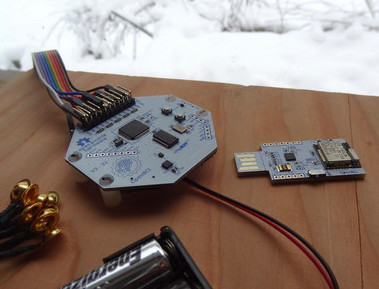

Welcome to OpenCB
Chronobiology examines periodic phenomena in living organisms, known as biological rhythms. This app aim to extract long term rhythms from some kind of data, from biosensing devices data (EGG, ECG..) to psychological tendencies. (TODO potato graph Diary whit meta data, heath data, filter, model, envents, feedback...)
Why ?
Why should one research patterns in it's life biological data ? We could prevent and manage better many problems by knowing when to to or not to do somesthing.
Why an open app ? Some poeple don't want to put their heath data in places they don't master. Here, everybody can see what is done, or can even deploy it's own private server with the one-click container ease. Another reason is sharing. It may be long and tedious to accumulate years of data to emerge usefull patterns. People starting with the app could benefit from models from other user.
What devices are needed to capture data ?
You could use for example your Smartphone as a poll-medium, a wearable devices or a biosensor to get data, a microphone to analyse your voice intonation or even in your wildest dremas a webcam to disect gesture or skin color.
The first version focus on two means : the "fallback mode" for people without specific device, using a website or mobile as a perpetual diary/poll to measure your mood and give you feedback, and the OpenBCI device, that allow to capture biosensing data on a memory card or stream the to a server.
Analysis
The data study mainly focuses on genetic algorithms to work out complex pattern recognition by modeling/comparing.
(TODO Data statistics, genetic algorithm, data formats...)
Basic solutions for data acquiring
Solutions for people that do not have specific devices : Daily poll, daily evaluation on mini-games, smartphone inputs, microphone (voice intonation changes), webcam (skin color, eyes analysis), etc... (Todo...)
Biosensing
OpenBCI brain waves acquisition

(Todo... check for other devices that OpenBCI with open api)
Wearable devices, connected watches...
(Todo... check for open protocol / api / programmable wearable devices )
Sleep tracking devices
(Todo... check for open protocol / api / programmable sleep tracker)